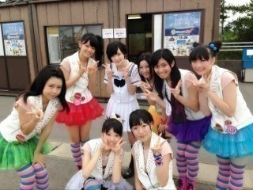

７月１３日、１４日と生駒の出身秋田県地元由利本荘市と男鹿市でライヴがありました！
１２日はみんなより早く秋田に入ってABSテレビの番組エビス堂ゴールドさんに出演したりごくじょうラジオに出演したりしました！
まず！
乃木坂になった日からの夢
地元秋田県でのライヴ！
叶いました！ヽ(・∀・)ﾉ
本当に嬉しくてでも照れもあって緊張もいつもの緊張じゃなくてなんか特殊な緊張感がきて(｡・・｡)
中でも本当の本当のガチ地元！
由利本荘市でライヴが出来たのが本当に嬉しくて嬉しくて！
いこまの吹奏楽の時の先輩とか地元の知り合いとかきて下さって。
みんな支えてくれていると実感しました。
いつも支えてくれている家族や友達の偉大さに改めて気づく事が出来ました。
感動して泣いちゃった(｡・・｡)
すごく力が湧きました。
頑張ろうって思う力がさらに強くなりました。
そして二日目の男鹿市で行われている海フェスタに出演しました！
あまり行けなかった秋田の時の高校の友達が来てくれてめちゃくちゃ嬉しかった！
そしていつもいろんな所に駆けつけて下さる乃木坂ふぁむ
のみなさんの優しさにジーンと来ました。
時々凄く悲しくなって自分はひとりぼっち何じゃないかって思っちゃうネガティブな私がいます。
でも今回の秋田凱旋で全て吹っ飛びました。
こんなにも優しい支えがあるんだって再認識しました。
みなさん本当にありがとうございます！
秋田凱旋
本当に楽しかった！
嬉しかった！
また来たい！
てか来る！
こまちスタジアムとか大館樹海ドームとか秋田県民会館とか行ける様に頑張ります！
あと！
海フェスタで
秋田のアイドルpramoちゃんと写真撮りました！
一度お会いしたかったから嬉しかった！
同じ秋田出身アイドル同士頑張りましょうねっ！

そして秋田出身のシンガーソングライター
高田由香さんと！
実は秋田時代通っていたダンススクールでイベントに出たとき同じイベントにいたんです！
だから二回目の共演ヽ(・∀・)ﾉ
秋田にはいろんなアーティストの方がいるんですね〜
そだね！
うん！
秋田大好きっ！
由利本荘市大好きっ！
ありがとう！
へばなっ！